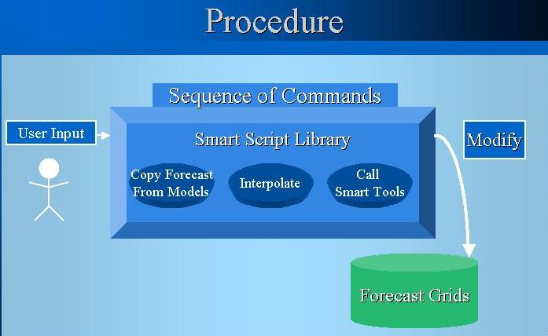

Once we have a set of Smart Tools, it is natural to
want
to execute related tools together in succession and to perform other
operations
such as copying, creating, and interpolating grids. For this, we have
Procedures.
The following diagram depicts the Procedure architecture within the
GFESuite
software. It shows Procedures as a sequence of commands which modify
the
Forecast database. Like Smart Tools, these commands are written in
Python,
but operate at a higher level through the Smart Script Library to copy
the Forecast database from models, interpolate grids, and call Smart
Tools.
The GFESuite software locates the procedure, sets up information to be
passed to it, and invokes it. Procedures can be run from the GFE or in
background mode.

Using procedures you can:
Procedures can be set up to appear under various menu
items on the GFE Main Menu. Keep in mind that you can make a
procedure
that can take several minutes to complete, particularly if it includes
a lot of interpolation.
For the following exercise, choose two or more tools
from the Smart Tool list you would like to run in sequence. One
possibility
would be to run the Assign_Value tool followed by the Smooth tool.
Note: If any of the tools in your procedure need
user-supplied
variables, the system will automatically ask the user for them when
your
procedure is run. Procedures can be simple or extremely powerful
because
of the availability of the Smart Script Class library. (
See
the section describing this library)
Answer to Procedure Exercise 1
Exercise Procedure-2 --
Using the SmartScript Library
from a Procedure
The Smart Script library contains methods for
"procedure-type"
commands which allow you to copy data from models, create grids from
scratch
and perform interpolation, as well as methods for calling Smart
Tools. In this exercise, we'll create a Procedure to call some of
these commands.
Study the SmartScript Libary commands: copyCmd, createFromScratchCmd,
getDatabase,
and createTimeRange.
Study the SmartScript Library section on "Calling
Smart Tools and Procedures."
From the Define Procedures Dialog Procedures Window, select
MB3-->New.
Name your Procedure and select OK.
Include a VariableList with a "model" field for the user to
select
an IFP input model.
Use the SmartScript Library commands: getDatabase,
createTimeRange,
copyCmd,
createFromScratchCmd, and callSmartTool to:
- Create a databaseID for the chosen model,
- Create a time range based on the model (perhaps the first 12
hours),
- Copy the grids from the model for the new time range,
- Create 1-hour T grids every 3 hours over the new time range,
- Run the Smart Tool from Exercise SmartScript-4 over the new
time range,
interpolating for missing data by setting the Missing
Data Mode. Pass the varDict from the Procedure to the Smart
Tool
in the "callSmartTool" command so that the VariableList dialog does not
appear twice. For this to work, make sure that the VariableList model
field
has the same name as that in the Smart Tool.
Run and test your Procedure to make sure it works.
Note
that
the Procedure could take some time to execute since the Smart Tool is
being
called over a time range of grids. You can notice the progress of
execution in the progress bar at the bottom right of the display.
Also, if you are running the GFE from a terminal window with a -console
argument, you will see status messages appear in the window.
Answer to Procedure Exercise 2
Procedures which are routine or take time to execute
can be run in background mode. This exercise will show you how to do
this.
Study the documentation and example for the runProcedure
command.
Run your the procedure of Exercise Procedure-1 from the command
line
using
the "runProcedure" command. Note you will need to specify an edit
area and a time range. Also, since you will be running the
Procedure
outside the context of the GFE, you will have to reference
specific
weather elements instead of "variableElement" in your ToolList.
Answer to Procedure Exercise 3